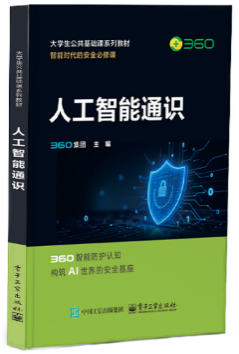
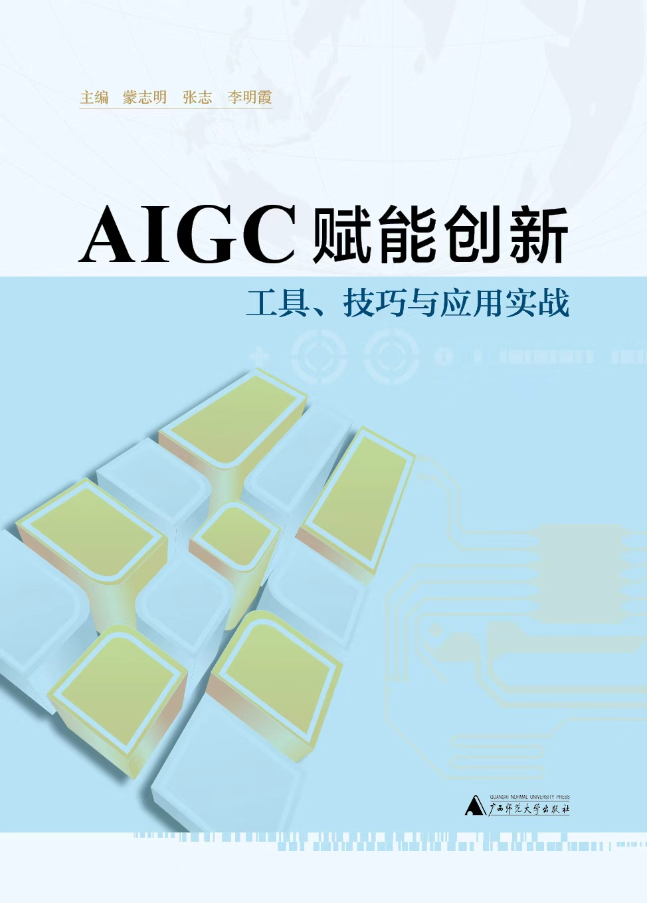
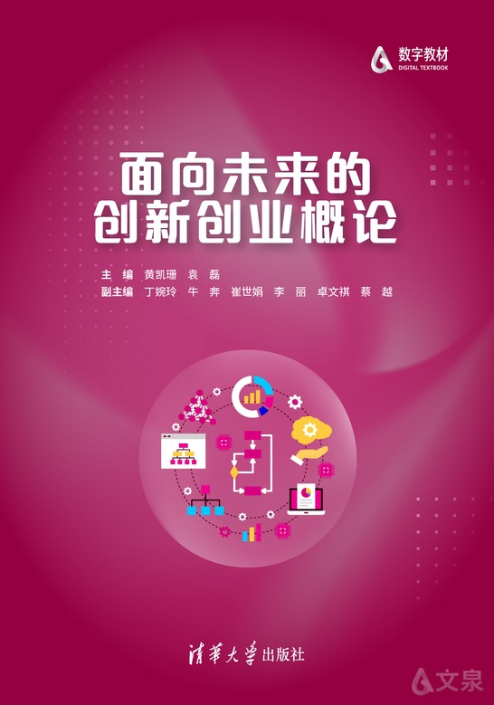

《面向未来的创新创业概论》
《人工智能通识》



《AIGC赋能创新：工具、技巧与应用实战》
纸质教材（慕课版）—— 纸书 + 扫码即学视频 + 在线测评的融合出版形态，重新定义 AI 时代通识教育标准
新形态数字教材 —— 工具、技巧、实战三位一体，配套动态更新的案例库与工具资源，让教材 "活" 起来
新形态、校企联合编写教材 —— 将真实商业案例与前沿创业方法论系统融入教学，实现从 "知识传授" 到 "能力建构" 的范式升级
2025年11月
清华大学出版社，2025 年 12 月
2025年11月
AI产教融合教材共建案例
秋叶深度参与高校教材改革，联合清华大学出版社、北京大学出版社、人民邮电出版社等权威出版机构，打造 "纸数融合" 新一代教材体系